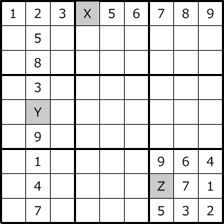
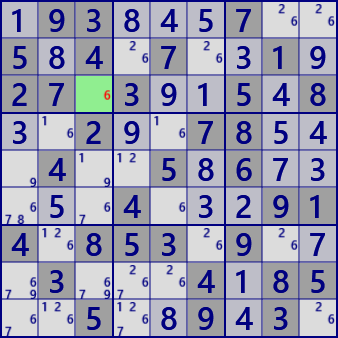

Last Digit
"Last Digit" is a rule of numerical arrangement of Sudoku.
In a house with one indeterminate cell, that cell is determined to the remaining digits.
For this example, set X=4 Y=6 Z=8.
Example

Cells with dark background are problem digits, light cells are solved cells, small digits are candidate digits
The r3c3 is determined to be digit 6.
.93...7..5.4.7..1.27.3..5.8..2..78...4..5.6.....4...914.853.9...3...4.85..5..9.3.
If simple program, it will be the following code.
Last Digit C# program(simple program)
partial class GNPZ_Analyzer{ public bool gSDK_LastDigitOld( ){ int rc=0; UCell P0=null; for( int tfx=0; tfx<27; tfx++ ){ int cc=0; for( int nx=0; nx<9; nx++ ){ UCell P = GetCell_House( pBDL, tfx, nx, ref rc ); if( P.No==0 ){ if( ++cc>=2 ) goto nextTry; P0 = P; } } if( cc==1 ){ SolCode=1; P0.FixedNo = P0.FreeB.BitToNum()+1; if( !MltSolOn ) goto LFond; } nextTry: continue; } LFond: . . (Solution report code) . return true; } private UCell GetCell_House( List<UCell> pBDL, int tfx, int nx, ref int rc ){ //nx=0...8 int r=0, c=0, fx=tfx%9; switch(tfx/9){ case 0: r=fx; c=nx; break; //row case 1: r=nx; c=fx; break; //column case 2: r=(fx/3)*3+nx/3; c=(fx%3)*3+nx%3; break; //block } return pBDL[r*9+c]; } }
Next is the Linq version. The essential part of the analysis algorithm is one line.
if( pBDL.IEGetCellInHouse(tfx,0x1FF).Count()==1 )
IEGetCellInHouse is defined as a static class with other similar functions
as an extension function of List
Last Digit C# program(Linq version)
public class SimpleSingleGen: AnalyzerBaseV2{ public bool LastDigit( ){ bool SolFond=false; for( int tfx=0; tfx<27; tfx++ ){ if( pBDL.IEGetCellInHouse(tfx,0x1FF).Count()==1 ){ SolFond=true; var P=pBDL.IEGetCellInHouse(tfx,0x1FF).First(); P.FixedNo=P.FreeB.BitToNum()+1; if( !MltSolOn ) goto LFond; } } LFond: if(SolFond){ . . (Solution report code) . return true; } return false; } }
IEGet function
static public class StaticSA{ static public IEnumerable<UCell> IEGetCellInHouse(this List<UCell> pBDL, int tfx, int FreeB=0x1FF){ int r=0, c=0, tp=tfx/9, fx=tfx%9; for( int nx=0; nx<9; nx++ ){ switch(tp){ case 0: r=fx; c=nx; break;//row case 1: r=nx; c=fx; break;//column case 2: r=(fx/3)*3+nx/3; c=(fx%3)*3+nx%3; break;//block } UCell P=pBDL[r*9+c]; P.nx=nx; if( (P.FreeB&FreeB)>0 ) yield return P; } } }